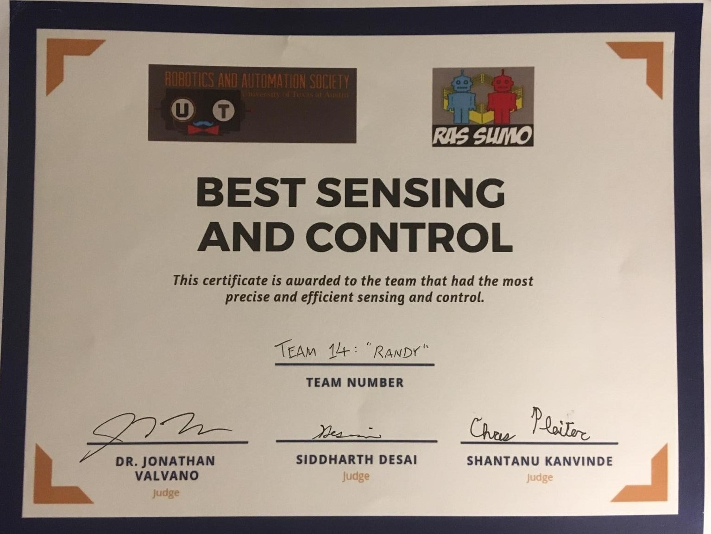

Juan G Mendoza
Education
-
The University of New Mexico
GPA: 3.67 2021 - Present
-
University of Texas at Austin
GPA: 3.67 2017 - 2021 -
Austin Community College
GPA: 3.86 2015 - 2017
Research Experience
All the research below was conducted in The Center for Nonlinear Dynamics and The Center for Complex Quantum Systems at The University of Texas at Austin
Advisor: Dr. Reichl Summer 2020 - Present
Analyzed Wigner and Einsenbud reaction matrix scattering theory to understand nuclear scaterring problems better.
Advisor: Dr. Florin Spring 2020 - Summer 2020
This project was affected by the COVID-19 pandemic situation and could not finish it as all research labs were shut down. The goal was to be able to estimate the amount of particles moving between pixels by analyzing intensity fluctuations. This was due to the particles being too small for a DIC microscope to resolve. Check this post to see more of what I managed to do in a month previous to the COVID-19 outbreak.
Advisor: Dr. Florin Spring 2019 - Fall 2019
Dr. Florin proposed that as bacteria cover a surface with biofilm, this would prevent vapor from escaping the surface, due to the benefits of a humid environment for the bacteria. I designed several experiments to test the evaporation rates of gel without bacteria as the control and gel with growing bacteria on the surface to compare their water evaporation rate. Unfortunately, no correlation was found between biofilm covered gel and evaporation rates.
Advisor: Dr. Matzner Fall 2018 - Spring 2019
Learned about Einstein's field equations and its applications.
Professional Experience
Class: PHY 302L Electricity and Magnetism, Light, Atomic and Nuclear Physics
Professor: Dr. Labun Summer 2020
Assisted students in understanding electromagnetism, circuits, and modern physics concepts such as special relativity.
Class: PHY 353L Modern Physics Laboratory
Professor: Dr. Sitz Spring 2020
Assisted students in understanding modern physics concepts, setting up experiments, and writting lab reports
Class: PHY 303 Physical Science; measurement, mechanics, heat, energy, and power
Professor: Suzanne Jacobs Spring and Fall 2019
Assisted professor in answering questions in-class, gave my own lectures to introduce non-science majors to the concept of dark matter, and helped students setting up experiments.
Company: Cisco
Location: San Jose, CA
Manager: Jeff Klaas
Summer 2019
Improved my department's continous integration by automating device tests every time a developer modified code in the repository corresponding to such device.
Professional Affiliations
Class: PHY 303 Physical Science; measurement, mechanics, heat, energy, and power
Professor: Suzanne Jacobs 2018
Participated in the annual Robotathon sumo competition, where me and a partner had to build a fully automated robot from scratch. Each robot would fight one adversary at a time, while the goal was to stay inside the circle. Our robot can be depicted in the video below in white and blue.
Mentored incoming transfer students to help them with the transition to a bigger university. TTS is a student organization dedicated to cater to the social and academic needs of all transfer students at UT.
2017 - 2019
Planet Longhorn is a student-run organization built to welcome, acclimate, and ultimately enhance the exchange experience of international students.
Awards
• Cisco's Supply Chain case competition 1st placeBuilt a Python GUI tool for managers in Cisco to track their suppliers and alert them of any customizable relevant events that may affect Cisco's supply chain.
 •
Best sensing and Control at RAS robotathon sumo competition
•
Best sensing and Control at RAS robotathon sumo competition
This was awarded to the team that had the most precise and efficient sensing and control.
Relevant Coursework
Physics
- Graduate Quantum Mechanics I, Dr. Weinberg
- Quantum Information, Dr. Aaronson
- Quantum Mechanics I, Dr. Caceres
- Quantum Mechanics II, Dr. Yeazell
- Waves and Optics, Dr. Heinzen
- Modern Physics, Dr. Sitz
- Modern Physics Lab, Dr. Fink
- Classical Electrodynamics, Dr. Caceres
Contact
The best way to reach me is via email at juangmendoza@utexas.edu.